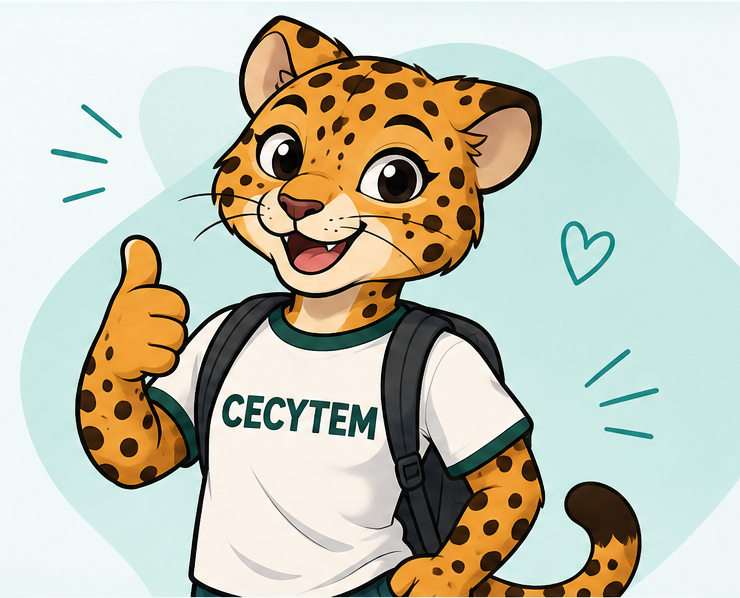

“Hablar de sexualidad hace que las personas se adelanten.”
La educación sexual ayuda a tomar decisiones informadas y responsables.
REALIDADInformación de educación sexual clara, respetuosa y fácil de entender. Explora, resuelve dudas y encuentra servicios de salud.
Aprender también es una forma de cuidarte.

Identifica algunas ideas comunes y conoce información confiable.
La educación sexual ayuda a tomar decisiones informadas y responsables.
REALIDADAlgunas infecciones pueden no mostrar síntomas; la orientación médica y las pruebas son importantes.
REALIDADConsultar a personal de salud es una manera válida de cuidar el bienestar.
REALIDADBusca hospitales por ciudad, colonia o código postal. El mapa se actualiza con tu búsqueda.
Los resultados, horarios y servicios pueden cambiar. Confirma directamente con cada institución antes de acudir.
Elige un tema para ver una guía breve. No necesitas compartir datos personales.
El consentimiento debe ser libre, claro, informado y puede retirarse en cualquier momento. Nadie debe presionarte para hacer algo que no deseas.
Si te sientes en riesgo o alguien no respeta tus límites, busca apoyo de una persona adulta de confianza o de servicios profesionales.
Elige una pregunta frecuente o escribe tu duda para recibir orientación general.
Asistente educativo con IA. Puede equivocarse y no diagnostica ni sustituye al personal de salud. No escribas datos personales. Los mensajes se envían al proveedor de IA para generar la respuesta; no se guardan en una base de datos de EduSex. Si no está configurada la API, el chat mostrará cómo activarla. En una emergencia, busca ayuda inmediata de una persona adulta de confianza o de los servicios de emergencia locales.
Responde tres preguntas educativas y revisa tu resultado.
Crea un perfil con un alias o entra a tu perfil de demostración.
Consulta la información a tu ritmo y mantén un perfil sencillo para esta demostración.
Importante: esta es una interfaz de demostración. El inicio de sesión todavía no verifica contraseñas ni protege cuentas reales. Para publicarla, se debe conectar PHP y MySQL y agregar medidas de seguridad.
Este prototipo no necesita registro para consultar la información. Si más adelante se agrega una cuenta, debe explicarse claramente qué datos se recopilan y para qué.